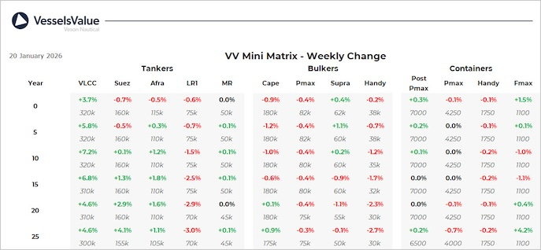

inWeekly Vessel Valuations Report21/01/2026

Bulkers:The Bulker S&P market showed a considerable uptick in activity this week as sellerscapitalised on residual buyer confidence following December’s freight rate recovery. Sales were concentrated in the Ultramax and Supramax segments, reflecting owner appetite for versatile tonnage amid persistent Red Sea routing uncertainties
Newcastlemax Nord Palladium (209,500 DWT, Apr 2021, SWS) sold SS/DD Due by Norden for USD 76.2 mil, VV Value USD 77.81 mil
Ultramax Elizabeth M II (63,700 DWT, Jun 2020, Nantong Xiangyu) sold to Chinese buyers for USD 30.5 mil, VV Value USD 27.01 mil
Supramax Pisti (56,900 DWT, Apr 2011, COSCO Zhoushan) sold by Goldenport Shipping for USD 12.8 mil (SS Due), VV Value USD 12.94 mil
Handysize TBC Praise (36,600 DWT, Sep 2012, Hyundai Mipo) sold by Orient Express Lines Inc for USD 14.4 mil, VV Value 14.85 mil
Tankers:VV VLCC Tanker values climb in a firming rate environment, amplified by Sinokor’s continued buying spree, which accounted for a further 11 VLCCs this week, bringing the total recorded in VV to 35. S&P activity has picked up across the smaller tonnage this week too, with values for older Suezmax and LR2s firming as a result.
2 x VLCC Delta Angelica & Delta Glory (319,800 DWT, 2012, Hyundai HI) sold to Sinokor by Delta Tankers for USD 160 mil en bloc, VV Value USD 170.06 mil
7 x VLCC (300-318k DWT, 2010-2016) sold to Sinokor by International Seaways, VV Value USD 647.85 mil
VLCC Cape Aspro (301,600 DWT, Mar 2010, IHI) sold to Sinokor by Pareto Maritime Services for USD 68 mil, VV Value USD 66.16 mil
VLCC Felice (298,000 DWT, Mar 2010, Universal) sold to Sinokor by Asia Pacific Shipping, VV Value USD 68.54 mil
2 x VLCC Hunter & Serendipity (299,900 DWT, 2021, Hyundai Samho HI) sold to Trafigura Beheer BV for USD 250 en bloc, VV Value USD 262.21 mil
Suezmax Eclipse I (150,900 DWT, Aug 2006, Hyundai Samho HI) sold by Universal Tanker Management for USD 33 mil, VV Value USD 33.04 mil
LR2 STI Kingsway (110,000 DWT, Aug 2015, HSG Sungdong Shipbuilding) sold by Scorpio Tankers for USD 57.5 mil, VV Value USD 57.16 mil
MR2 (Chemical/Product) Ellie M II (45,000 DWT, Jun 2007, Hyundai Mipo) sold to undisclosed buyers for USD 15 mil (DD Passed), VV Value USD 14.65 mil
MR1 (Chemical/Product) Maersk Kara (38,400 DWT, Mar 2008, Guangzhou Shipyard International Company Ltd) sold by Maersk Tankers AS for USD 12 mil (DD Due), VV Value USD 12.65 mil
Containers:Demand remains firm in the second-hand market, and with charter rates moving sideways, owners are under no pressure to sell, keeping sale prices up for the foreseeable
New Panamax 2872 (Hull) (14,000 TEU, Nov 2026, Jiangnan Shanghai Changxing HI) sold to MSC for USD 170 mil, VV Value USD 162.3 mil
Panamax Lisa (4,253 TEU, Sep 2009, Jiangsu New Yangzijiang) sold to MSC with delivery in 2028, for USD 23 mil, VV Value USD 32.6 mil
Feedermaxes Contship Ono, Contship Ray (1,118 TEU, 2007/8, Jinling Shipyard) and Contship Ray (1,114 TEU, Oct 2007, Yangzhou Dayang Shipbuilding) sold to Medkon Lines inc TC for USD 34 mil en bloc, VV Value USD 34.14 mil
Feedermax Titan (1,122 TEU, Aug 1996, Volkswerft) sold to European buyers for USD 6 mil, VV Value USD 5.1 mil
